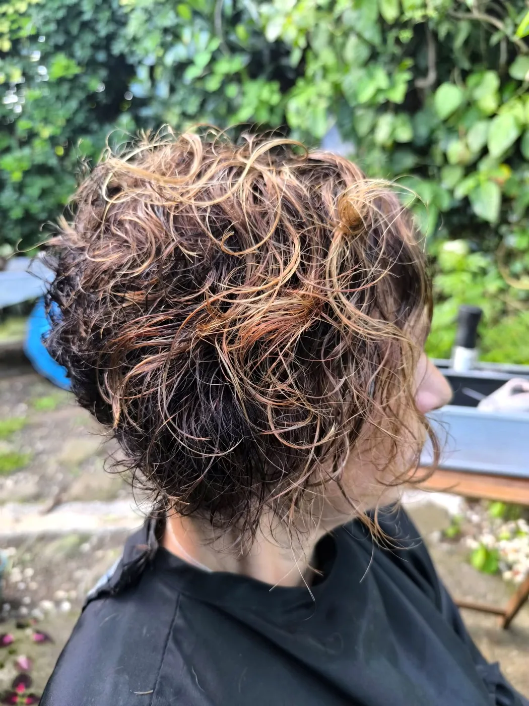
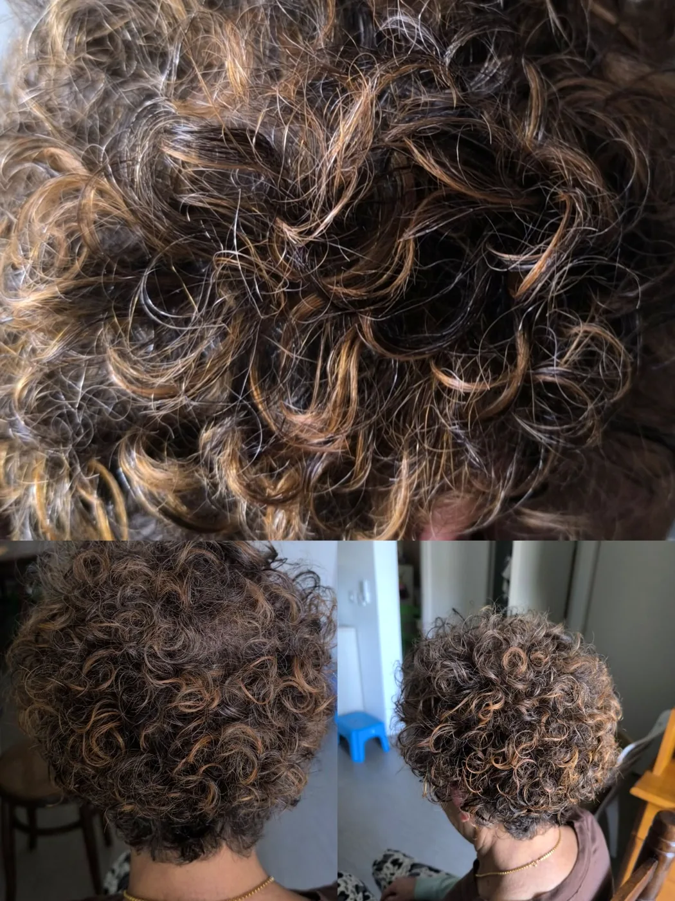
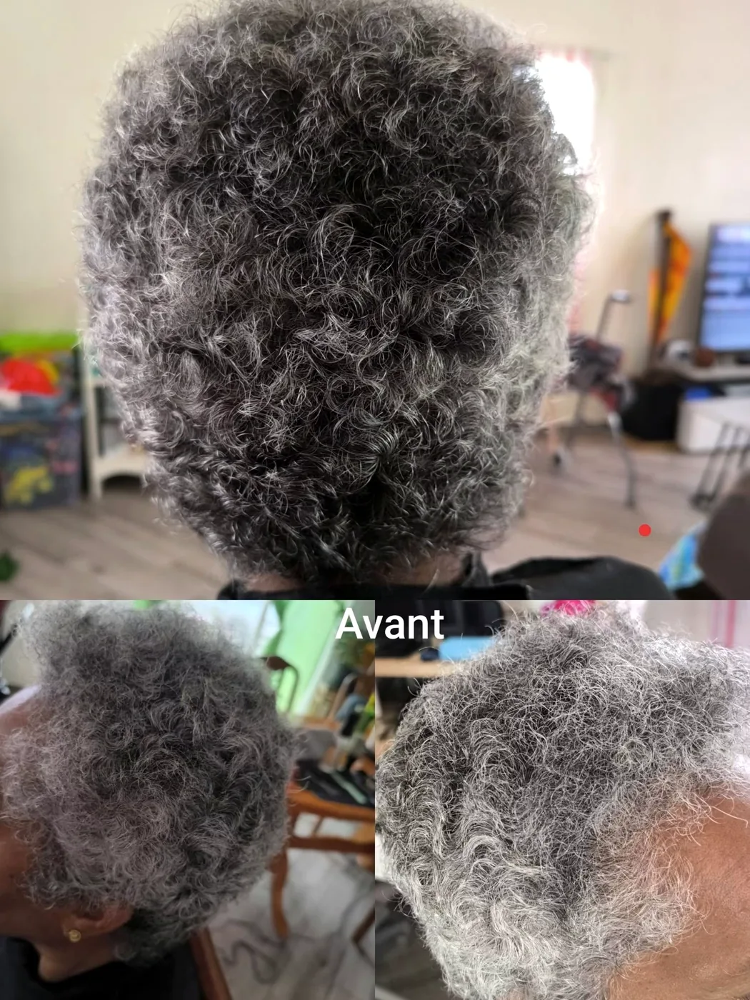
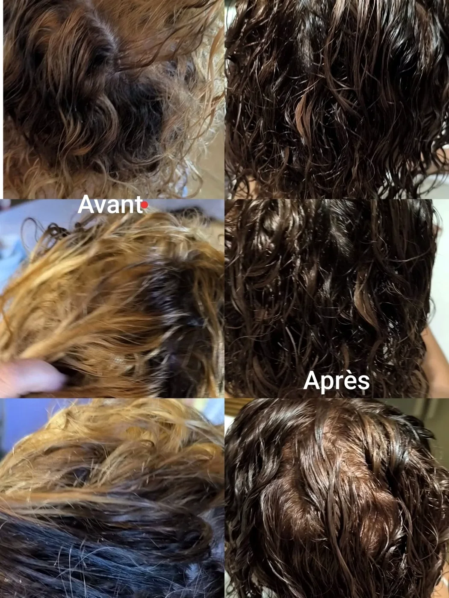
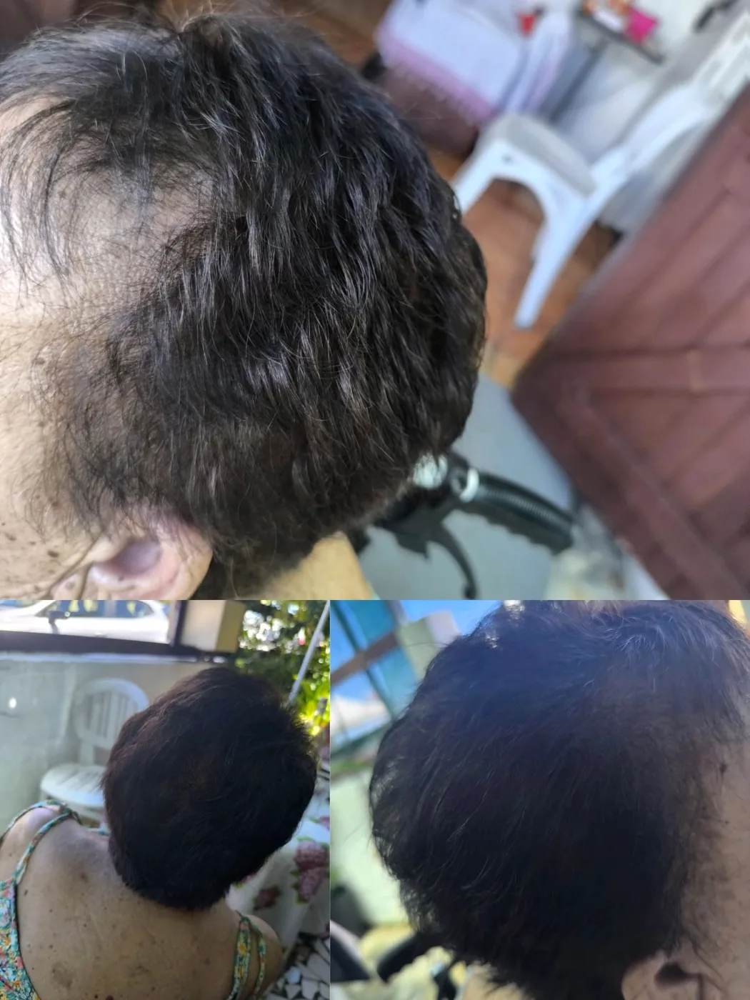
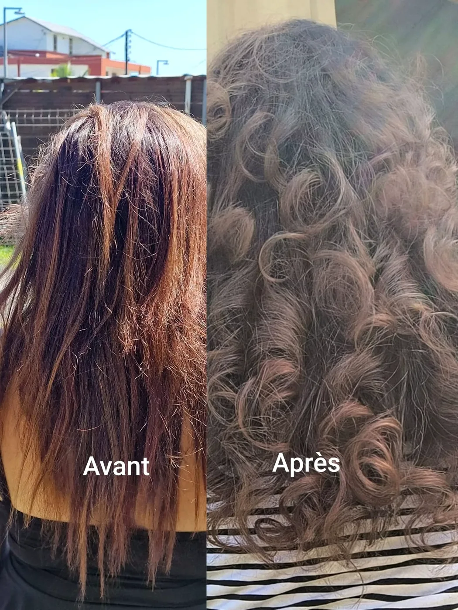
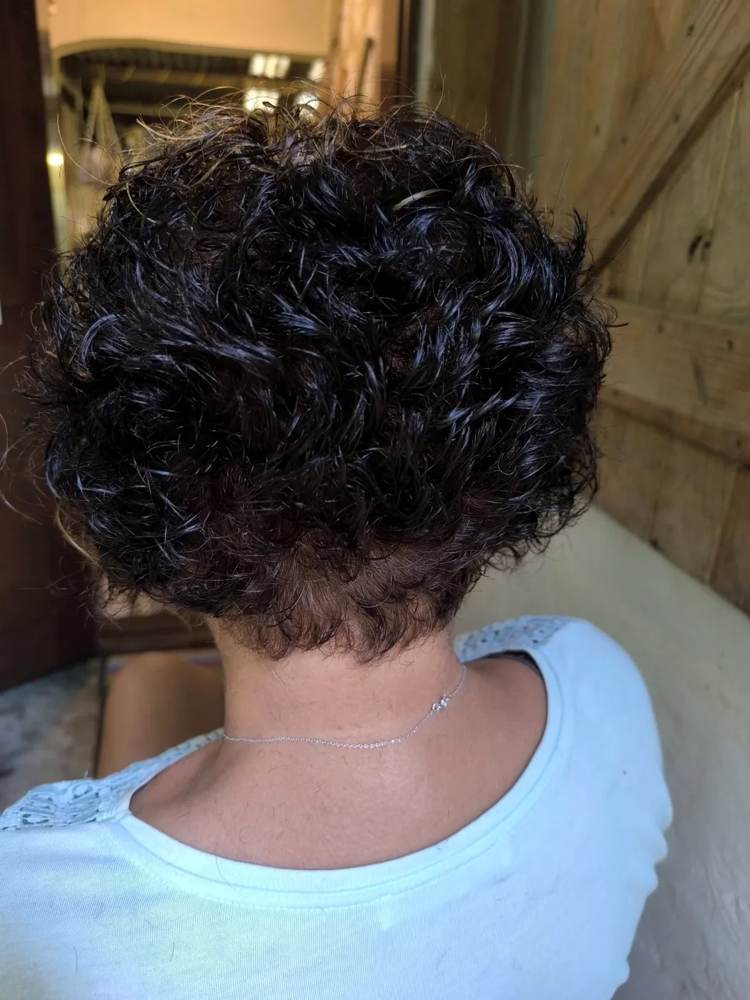

Coupe & texturisation
Dégradé, pixie, undercut, asymétrie… et sa préférée : la texturisation, pour une coupe qui bouge et vit.
Coiffeuse visagiste à domicile · Le Tampon
« Vous voulez une prestation comme en salon ? » Coupe, couleur, mèches, brushing, boucles sublimées : votre coiffeuse diplômée BP vient chez vous, avec tout son savoir-faire.
Le Tampon et alentours · coiffure à domicile depuis 2004

L'élan, l'art, et vous
Coiffeuse visagiste conseil, diplômée du BP, Élan d'Art Coiffure se déplace à votre domicile pour une prestation adaptée à vos cheveux : on regarde ensemble votre matière, votre visage, votre envie, puis on passe à l'action.
Une coupe pixie avec undercut, une asymétrie en carte blanche, un rattrapage de couleur, des boucles bien dessinées : chaque rendez-vous est un petit défi relevé avec plaisir, et chaque cliente repart en se sentant bien.
Carte blanche que j'ai ! Ça fait plaisir, une telle confiance ! Alors go pour une asymétrie.Élan d'Art Coiffure · publication du 28 mars 2026
Prestations
Dégradé, pixie, undercut, asymétrie… et sa préférée : la texturisation, pour une coupe qui bouge et vit.
Couleur racines, mèches, rattrapage de couleur par une professionnelle : une teinte qui retrouve tout son éclat.
Crème pour structurer les boucles, activateur de boucles, brushing droit ou bouclage au fer, séchage naturel.
Shampooing, soin, et le fameux « touching » final pour un résultat net et lumineux.
Une coiffure travaillée pour un mariage, une fête, un grand jour, réalisée sur place.
Pour ces messieurs aussi : la taille de barbe à l'ancienne, à domicile.
Réalisations
glissez pour voir →






Photos publiées par Élan d'Art Coiffure sur sa page Facebook
Semaine bleue · Les Makes
En octobre 2026, avec Vcam Makes, Élan d'Art Coiffure a passé une journée entière à faire plaisir au maximum de personnes : coupes, brushings et un vrai moment de bien-être, avec les gramounes des Makes à l'honneur.
Toutes très contentes de leur moment. Le mot de la fin, sur sa page : « À refaire ».
Coiffure & bien-être, avec le cœur.
Offrir pour Noël
Une coupe, une couleur, un brushing pour les fêtes, directement à la maison : un cadeau qui fait du bien, pour une maman, une amie, une gramoune. Demandez-nous, on prépare ça ensemble.
La prestation de votre choix, réalisée au domicile de la personne gâtée.
Brushing, boucles ou chignon événementiel, juste avant la fête.
Rendez-vous
Téléphone / WhatsApp : 0693 04 00 36
E-mail : elandartcoiffure07@gmail.com
Secteur : Le Tampon et alentours, à domicile
Facebook : Élan d'Art Coiffure
1. Vous appelez ou écrivez au 0693 04 00 36.
2. On parle de votre envie : coupe, couleur, boucles, événement.
3. Votre coiffeuse se déplace chez vous, et vous profitez.